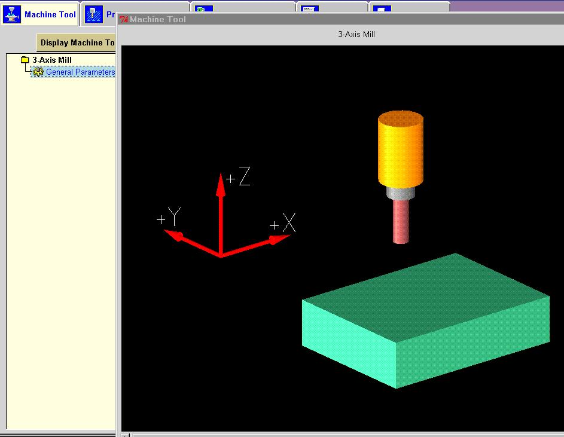
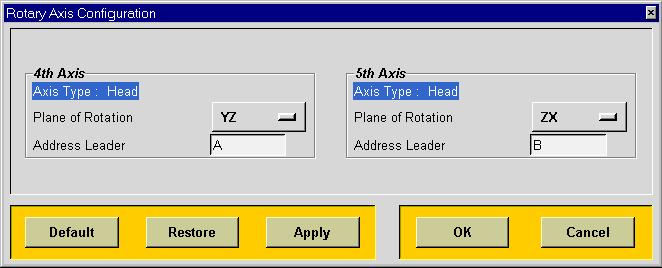
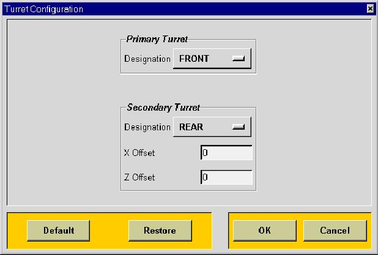

The option Display Machine Tool will give you an up to date picture of your machine tool so that you can visualize the axis orientations. For a four and five axis milling machine it will also show the address leader designation (A,B or C) and limits for each rotary axis.

The option Output Circular Record can be set to Yes or No. If set to Yes, then all circles that can be output based on the circle motion parameters will be output. If set to No there will be no circle blocks, (G2 or G3) output.
Linear Axis Travel Limit is not yet implemented and is for reference purposes only.
Home Position defines the default from position if a FROM is not specified.
Linear Motion Resolution defines the minimum value that all coordinate will be rounded to. This does not necessarily control the format of the coordinate data. You must change the number of decimal digits output to do that.
Traversal Feedrate defines the
feedrate that will be used to calculate machine time for rapid motion.
This value will also be used to determine if a linear feedrate move is
actually to be performed at rapid.
The Rotary Axis Configuration dialog allows you to define the Plane of Rotation and Address Leader for both the fourth and the fifth axis. This dialog may be accessed from either the fourth or the fifth axis configuration dialogs. Note that you must make sure you change the Address Leader when you change the rotary axis plane. Note that the plane of the fourth axis must be different than the plane of the fifth axis. This dialog is only available for specifying the parameters of a five-axis machine tool. It is not available for a forages machine tool only.

The option Machine Zero to Rotary Axis Center allows you to define where the center of the fourth axis is in relation to your machine zero. This is the 3-d distance is set usually set to zero. This value must be programmed correctly for the post processor to be able to map correctly between the MCS programmed in UG and the Machine Tool Coordinate System.
The option Rotary Motion Resolution allows you to control the number of digits that the rotary angle will be rounded to. This is typically .001 degrees for most contouring axes.
The option Maximum Rotary Feed Rate allows you to define the maximum degrees per minute that the fourth axis can rotate. If during a combined linear and rotary move, the amount of rotation during that move exceeds the maximum DPM, the post processor will reduce the federate so that it does not exceed this value.
The option Pivot Distance is not valid for the dual rotary type five-axis machine tool. You can define the distance from the pivot point to the spindle gage point. This value may be specified with either the fourth or the fifth axis dialogs, however there is only one pivot distance on the machine tool.
The Angular Offset option must be used when a tool axis of (0,0,1) does not result in angular positions of 0.0 for the fourth axis. This offset is needed for some Sundstrand head/table machine tools. Enter the value that needs to be added to adjust the rotary angle (usually -90).
The option Axis Rotation defines whether the fourth axis rotates according to the right-hand rule. Standard is default and most rotary tables rotate clockwise to a larger angle. If your table does not rotate according to the right-hand rule, then set this value to Reverse. For example, if get a B90 when you expect a B-90, you may need to use the reverse option.
The option Axis Direction defines
how your rotary table determines whether to rotate clockwise or counterclockwise.
The following options are available, Magnitude Determines Direction or
Sign Determines Direction.
Magnitude Determines Direction denotes that the sign is used algebraically to determine the angular position. B-90 and B90 are different positions on the rotary axis and are 180 degrees apart. Rotation to a larger angle is always clockwise and rotation to a smaller angel is always counter clockwise. Typically the travel limits on this type of table is more than 360 degrees (i.e. -9999 to 9999)Rotary Axis Limits allows you to control the minimum and maximum angles that can be programmed for the fourth axis. If the range of travel is limited to less than 360 degrees, you must specify the valid range of travel measuring clockwise on the table. For instance, if the range of travel is 40 degrees, plus or minus 20 degrees, the minimum angle would be specified as 340 degrees (or -20) and the maximum angle would be specified as 20 degrees. If the rotary axis has no limitation on travel, there are two possible choices for the values for the minimum and maximum angles. If the sign determines direction, you must select 0 degrees for the minimum and 360 for the maximum. If magnitude determines direction, the minimum can at most be -359.999 degrees and the maximum has to be at least 359.999 degrees.Sign Determines Direction means that the sign is used only for direction of rotation. B90 and B-90 are the same position on the rotary table. The minus sign on B-90 means that the table will rotate counterclockwise from wherever it was at to 90. Likewise, B90 means that the table will rotate clockwise from wherever it was at to 90. Typically, the limits on this table are from 0 to 360.
The Rotary Axis Limit Violation option specifies how the post processor will behave when a rotary axis limit is reached. The post processor can either give a warning only or retract, rotate then re-engage.
The option Consecutive Linear Motions allows you to combine output blocks that have the same x, y and z values but have different rotary values.
The Rotary Axis Configuration dialog allows you to define the Plane of Rotation and Address Leader for both the fourth and the fifth axis. This dialog may be accessed from either the fourth or the fifth axis configuration dialogs. See the Fourth Axis section for details.
The option Fourth Axis Rotary Center to Fifth Axis Rotary Center allows you to define the distance between the center of the fourth axis to the center of the fifth axis. This 3-d distance is set usually set to zero. For a dual rotary five-axis machine tool, this vector is the represents distance between the axis vectors of the fourth axis and the fifth axis. For a dual head five-axis machine tool, this distance is the distance between the pivot points of the fourth and fifth axes. This value must be programmed correctly for the post processor to be able to map correctly between the MCS programmed in UG and the Machine Tool Coordinate System. See Appendix A for a complete description.
For the remainder of the options for the fifth axis parameters, see
the descriptions under Fourth Axis Parameters. The parameter descriptions
are the same for both the fourth and fifth axes.
The Turret option allows you to define whether you have one or two turrets. Currently the two turrets must be a fixed distant apart and do NOT move independently. When you select the two turret option, you must specify the names of the two turrets and the distance between them. Currently, you must select from one of the six names available for the names of the primary and secondary turrets. You must use these names for the turrets in Unigraphics so that the post processor knows whether or not to add the offsets. The distance is measured from the primary turret to the secondary turret. This value will be algebraically added to the x and z coordinates when the secondary head is being used.

The Lathe Output Method
defines your basic tool tracking method.
Tool Tip -- means that you want the x
and z values in your NC output file to represent the tool tip location.
This is accomplished by resetting the tool tip location with every tool
change.
The basic elements for tool tip programming are: